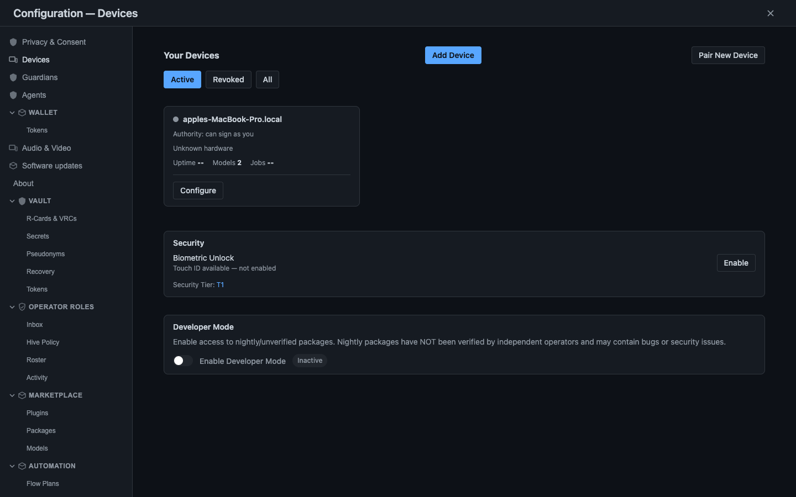

Four things changed this week
One per major area. There is no marquee demo this time — the week's real work was hardening the things that hold identity and memory, and refusing to let green tests stand in for finished ones. Two of the four below are design positions published with their honest status attached, which is the shape most of this window took.
No stolen device can sign as you
Threshold signing splits the identity key so a quorum of your own devices must cooperate. The in-memory split is shipped; the cross-device ceremony is in test.
Search understands what you meant and never leaves the device
Meaning-based matching runs beside keyword matching, blended, entirely on your own hardware. The query is never a network request, so no remote index logs it.
A feature was un-shipped on purpose
The terminal cockpit was marked finished on the 18th and had that marker taken back on the 19th, when a final review found drift behind green tests.
Nothing gets to invent a name any more
All 617 event types now declare exactly what they become in the queryable graph, and a rule fails a run when a conversion step settles a name on its own.
The quorum signs, or nothing does

The feature: the signing key that acts as you — the one object which, if stolen, lets somebody rotate your identity, add a trusted device, or speak in your name.
Before: at the instant of signing, the whole private key had to exist somewhere in one piece, and at that instant a single compromise was total.
Now: the key is split into shares that are never put back together. Each device signs partially with its own share, and enough partials combine into one ordinary signature.
Why one key is the wrong unit
A private key is a perfect proxy for a person: whoever holds it can sign as you, spend as you, and rotate your identity as you.
Encrypting the disk and sandboxing the process do not change that, because the key still has to exist whole at the moment it signs.
So the answer was not to hide the key better. It was to stop letting any one key be enough, which is a different problem with a different shape and a well-studied name.
Splitting a signature, not a secret
The obvious move — copy the key to a second device — is strictly worse, because now there are two things to steal.
Splitting a secret into shares you later reassemble is closer, and still wrong: at the instant of reassembly the whole key exists in one place again, which is exactly the moment you were trying to eliminate.
The scheme used here splits the key into shares that are never reassembled. Each shareholder computes a partial signature from its own share alone, and a coordinator combines a threshold of those partials into one final signature.
What comes out is an ordinary signature that any standard verifier accepts, with no idea it was produced by a committee. Fewer devices than the threshold, however many of them are stolen, can do nothing at all.
Two distances, two attackers
The idea is applied at two distances, and it is worth keeping them apart because they defend against different people. On a single machine, the signing key never sits in process memory as a usable whole.
It lives in a separate sandboxed process, split in two, masked against a random pad that is re-randomised on a timer, locked out of swap, and marked unreadable until the instant of use. That layer is shipped.
It defends against malware scraping your memory and against a careless crash dump leaking your identity. The usable whole exists for microseconds during a signature, and the pages holding it are excluded from crash dumps.
The second distance is across your own devices. Shares live on different physical machines, and an identity-critical action requires them to cooperate in real time: each co-signer prompts you, you approve, and only when enough partials come back does the action go through.
The scoping is deliberate. A cross-device quorum guards the rare and dangerous actions — rotating your identity, adding or revoking a trusted key, changing the threshold itself. Everyday signing uses a fast per-device key, because a quorum ceremony for every routine event would be unusable.
Handing a share to a new device
Enrolling a second device means getting it a share without that share ever being readable in transit. Each one is sealed into an envelope using an ephemeral key agreement, a derivation step and authenticated encryption, and the receiving device opens it inside its own sandbox.
The master key has no birthplace either. A distributed generation step produces each device's share directly, so the whole private key is never assembled — not during setup, not once.
Redistribution to a fresh set of devices, and cleanly forgetting a share during recovery, sit beside it as real operations.
The plaintext share bytes never cross the boundary between the two machines. That is worth stating plainly, because a scheme that protects a key everywhere except during enrolment protects it nowhere — the weakest moment in a key's life is the one an attacker will wait for.
Signing what you were actually shown
A nasty class of attack shows you approve rotating your phone in on screen while the bytes you are asked to sign mean add the attacker's key as trusted. Threshold signing does not prevent this on its own, because it signs whatever message it is handed.
The closure is to bind the human-readable purpose into the signed material with a canonical, deterministic encoding, so the signature is over the purpose you were shown. Sign for a rotation, and those bytes cannot be reused to mean something else.
A signature that does not bind which purpose, which session and which moment is a signature waiting to be replayed. A review during this work caught cross-device handshake signatures that were static and replayable — one observed handshake could be replayed in a fresh session to inject unauthorised trust. It was fixed by binding a fresh per-handshake value into the signed material, then hardened with short-lived staples and a proactive revocation notice.
The same discipline shows up a layer down, where the terminal client proves itself to the local node with a one-time challenge and no shared password on the connection (Proving who you are to a program on your own machine).
The rule underneath the scoping
The governing rule is simple to state: the rarer and more dangerous the action, the more keys must agree. Rotating an identity is rare and catastrophic if forged. Appending an ordinary event to your own chain is constant, and a ceremony around each one would be unusable.
Treating both the same way produces either a system nobody can use or a guarantee that protects nothing. Grading the ceremony by the stakes is what lets the strongest protection exist at all, because it is only ever asked for when it is worth asking for.
When a co-signer goes dark
Devices fall asleep, lose signal and wander out of range mid-ceremony. Plain threshold signing is unforgiving here: commit to a round with a chosen set of participants, lose one, and the round aborts even when the remaining devices were perfectly capable of finishing it.
A robustness wrapper from the literature fixes exactly that, by letting a ceremony adapt to whoever is still answering. It is scoped, understood and deliberately deferred until real usage shows ceremonies failing often enough to matter, because building robustness against an unmeasured problem is its own kind of waste.
What is shipped, and what is not
The in-memory split is shipped. The cross-device quorum is in test: the cryptographic core, distributed generation, sealed share delivery, redistribution and purpose binding are built and passing their unit and integration tests.
What remains is the long tail — migrating every last verifier and signing call-site onto the purpose-bound path, and driving the full multi-device flow through the real pairing interface. It is not yet a button a user presses across two phones, and the write-up says so rather than rounding up (No single key).
Your search never becomes a fact about you
The feature: searching your own notes, files, messages and conversations, and getting back what you meant rather than only what you literally typed.
Before: exact-letter matching. Search for garden and a note that said backyard or growing space sat there invisible, because the letters did not match and nothing knew the words were about the same thing.
Now: meaning-based matching runs alongside keyword matching, the two are blended, and results follow the connections between your memories. All of it happens on your device.
The query is the sensitive part
Here is a habit worth noticing: almost every time you search, the query leaves the building. The words travel to a server to be matched, logged, ranked and often remembered, and the thing you were looking for becomes a fact about you on somebody else's computer.
That is obviously true of web search, and increasingly true of searching your own notes, files and messages.
The premise here is the opposite — not a promise to be careful with your query, but a design in which the query has no opportunity to be careless, because it never goes anywhere.
It is worth being precise about what is being claimed. Not that the query is encrypted in transit, and not that a retention policy governs what happens to it afterwards. There is no transit and no retention, because the search does its work and leaves no trace anywhere but on your own machine.
Two ways of matching, blended
Keyword search is fast, exact and a little bit dumb. It finds documents that literally contain the letters you typed, so a note that used a different word for the same thing sits there invisible.
Meaning-based search converts text into a mathematical representation that captures the concept behind the words rather than the words themselves, so garden, backyard and growing space land near each other because they mean something similar.
Neither approach wins alone. Keyword matching gives precision when you know the exact term; meaning-based matching gives reach when you do not. The system runs both and blends the results, taking the sharpness of one and the coverage of the other.
The part that carries the premise is where the understanding happens. The model that captures meaning lives on your device, so there is no remote step in which the query is sent away to be interpreted before an answer comes back.
A map of your own connections
Matching documents is only half of what makes this useful. As the system is used it quietly builds a map of how your memories connect — people, projects, files, conversations and ideas, linked to each other.
A search then follows those links rather than stopping at the hit.
Search for a person and you can surface not only their contact entry but the project you worked on together, the group you both belong to, and the conversation where they mentioned the thing you are half-remembering.
The match is a starting point; the connections turn a hit into an answer.
That map gets richer the longer the system is used. After months you are not searching a flat pile of files but a connected picture of your own digital life — one nobody else can see, because it was assembled on your device from your data and never copied anywhere.
What a map like that is owed
A connected picture of everything a person touches is exactly the artefact that most deserves protection, and the identity work published the same week draws that line from the other direction. The most fragile beliefs a person holds get the strongest protection in the system, not the most valuable ones.
It is the same argument arriving from two sides. Search is allowed to know more about you because it never tells anyone, and a belief you would least want printed is guarded most fiercely because guarding what is valuable while leaving what is broken exposed gets the priority backwards.
What it feels like
You remember a conversation from months back in which somebody recommended a book about forest gardening, and you cannot remember who, or when, or where it happened. In a normal tool this is hopeless, because you do not have a keyword to type.
So you ask the question the way you actually remember it: who recommended that book about forest gardening? The search finds the conversation without the precise phrase, then follows the links to the person who said it, the channel it happened in, and the title they named.
That question is a fairly intimate window into what you are doing and who you talk to, and it was never a network request. Nobody got to log it, and no remote index learned that you are interested in forest gardening this week.
Why the constraint makes it better
Running locally reads as a privacy tax — capability given up in exchange for safety. The opposite is closer to true. An index that lives on a server can only ever see the slice of your life you were willing to upload to it.
A search that runs on your device can draw on everything you have, because all of it is already there and none of it had to be risked by sending it away.
The connections that make a search feel like it understood you are exactly the ones you would never want to hand to a remote index in the first place.
So the constraint is not good search minus privacy. It is search that can afford to know more about you precisely because it never tells anyone, and it sits inside the same position that says nobody needs to agree with you about your own data (Why there is no global ledger).
The account published this week explains how the search behaves and why the local constraint was chosen (Search that never phones home). It describes a design position and the behaviour documented for it, rather than reporting a landing inside this window.
What this means, in plain terms
Most of what lands in a week belongs to the thing it landed in. A few things generalise past it. These five are the ones this week actually paid for, and they were paid for expensively — three of them come out of something that had already gone wrong, which is the only way this section ever earns its place.
A completion you cannot take back is not a check
The terminal cockpit was marked finished on the 18th, and the marker was downgraded and then withdrawn on the 19th, when the final review stage found drift behind green tests and named fourteen open follow-ons (We un-shipped our own feature). A status that can only ever be granted is a label, not a check.
A test written against the code can only agree with it
A passing test proves the code does what the test asserts, and says nothing about whether the assertion is what the design requires. Anchor it to current behaviour and you have built an elaborate machine for confirming that A equals A (Any test that passes over a gap is a lie). Anchor assertions to intent, not to behaviour.
Declare the mapping, or something will choose it for you
A generic conversion step was free to invent the name an event took in the queryable graph, so the same mismatch returned after every individual fix. All 617 event types now declare their own name, and a rule fails the run when a conversion settles one silently (the kind-alias trap). A choice nothing constrains is made differently every time it is made.
Fix the instance and you have left the class open
Every mistake that bites gets a rule that detects the whole class of it, so
that mistake cannot come back silently and the set of things that can go wrong
only ever shrinks
(What naoms check actually checks).
A lesson recorded in prose is forgotten; a lesson that fails a run is not.
The most fragile data deserves the strongest protection
Self-limiting beliefs — the things a person half-believes in the dark — sit behind the strongest protection tier in the system, above ordinary sensitive data, because exposing one is a trespass on the person rather than a loss they can price (The data we decided to treat as sacred). Measure protection by dignity, not by damage.
How much healthier is it than a week ago?
| Metric | Value | What it counts |
|---|---|---|
| Commits landed | 877 (~880) | Commits on the main line's first-parent path for the window |
| Commits authored | ~6,400 | Every commit authored across the parallel work that later merged |
| Busiest day | 1,347 | Commits dated Saturday 2026-04-18, merges and parallel churn included |
| Lightest day | 502 | Commits dated Wednesday 2026-04-15, on the same rule |
| Surfaces captured | 35 | Redesigned browser surfaces captured on 2026-04-19 |
The counting rule changed this week, and the change is stated rather than absorbed. Previous windows quoted a single commit total. This window separates what landed on the main line from what was authored across the parallel work, because the gap between 877 and 6,400 is large enough that one number alone would mislead in either direction.
Neither figure is comparable to the previous window's single total, and pretending otherwise would produce a change figure with no meaning. The comparison resumes from here on this window's rule.
The gap between the two commit figures is itself the interesting number. One counts what survived review and landed; the other counts every step taken to get there, including the steps later folded, reworked or thrown away. Quoting only the larger flatters the week, and quoting only the smaller erases most of the effort that produced it.
Read 6,400 as every micro-commit and 877 as what actually landed. The per-day figures follow the wider rule and include merges, so they describe the shape of the week — heavy Friday and Saturday, quiet midweek — rather than a rate of production.
Neither total says anything about whether the week's work was good. A count is a pulse, not a score. Wednesday was the lightest day of the week and was also a consolidation day — an onboarding loop wired up as a test, the first slice of a documentation-first search, scaffolding for two-device work, one more guard. None of it photographs well and all of it is load-bearing.
Net lines are not quoted, deliberately. This window's diff is dominated by a 629-file test relocation, which is a move rather than new code, plus a fixture-encryption change and coverage artefacts. A net-lines figure here would be a dishonest headline, and the honest lead statistic is that roughly 880 commits landed.
A bulk edit made by a machine is worth only as much as the proof that it changed nothing. This one rewrote 2,091 imports and 2,997 path literals in a single pass, and a green suite afterwards proves very little on its own — staying green is exactly what a mechanical rewrite is best at.
What makes the proof mean something is naming the exclusions before the pass runs. Files that record what happened in the past were held back, because editing a path inside a historical record falsifies it and nothing goes red over the lie. Deciding that in advance is the whole safeguard.
The figures deserve their own note, because the gap is the kind of thing this week was about. The plan for the pass described 603 files; the landing records 629. The landing figure is the one cited here, and the estimate is named rather than quietly dropped.
the identity key stopped being a single stealable object and the honest status of that work was published with it, search by meaning was described as something that never leaves your device, a feature that had been marked finished had that marker taken back a day later, and the week's texture was a steady stream of guards added after being bitten.
The pattern behind each of those guards was identical: something bit us, so add a gate that refuses it next time. That is a healthier reflex than resolving to be more careful, because a rule does not get tired at two in the morning.
Three honest notes.
The code-signing tooling shipped with a broken tier, reported by us, in the same change that shipped it. Reporting the limitation alongside the capability is the only version of that announcement worth making.
A performance regression was reopened rather than closed. It is honestly reopened, unfinished, and sitting in the backlog rather than quietly marked resolved.
Work in one area destabilised another. A fixture-encryption change unsettled a different effort's onboarding tests, and a database passphrase derived from a mnemonic was reverted. Both are recorded as cross-effort collateral rather than folded into somebody's success.
What changed, area by area
Everything that moved this week, in rough order of how much of it moved. Per-area file counts are not available for this window, so each area is named without one rather than with a figure that cannot be reproduced.
The week's published thinking sits in this list beside its code, because a design position argued in the open is part of what moved. Where an area describes a design or a written-down mechanism rather than a landing inside this window, the card says which it is.
Every chain event type now declares exactly what it becomes in the queryable graph — 617 of them — instead of leaving the choice to a generic conversion step that could label an approved device as something else entirely.
A new rule fires when a conversion settles a name silently, and six scattered descriptions of the problem, written by six past sessions, were pulled into one page ( the kind-alias trap ).
One pass rewrote 2,091 imports and 2,997 path literals across 629 files, and the green suite that followed is the weakest evidence available, because staying green is what a mechanical rewrite is good at.
The safeguard was naming the exclusions first: files that record what happened in the past were held back, since editing a path inside a historical record silently falsifies it and nothing would have gone red over the lie ( Any test that passes over a gap is a lie ).
Four rules were added the same day the cockpit's finished marker was withdrawn, aimed at the drift that caused it, and a batch of others landed in advisory mode — they exist, they report, and they do not yet block.
Each one exists because something bit us and the fix was a gate rather than a resolution to be careful ( What naoms check actually checks ).
The identity key is split so no single device can sign alone, with the in-memory split shipped and the cross-device quorum in test.
Distributed generation, sealed share delivery, redistribution and purpose-bound signing are built; the full multi-device flow through the real pairing interface is not ( No single key ).
Tooling to sign and verify the daemon you are running shipped, with a finding that its first tier is broken filed in the same change.
The capability exists and its limit is published beside it.
Recording an identity fact now creates the node it is meant to create, so the fact becomes a memory you can find later rather than an event that vanished into the record.
Meaning-based matching runs beside keyword matching and both stay on your device, with results following a map of how your memories connect that grows the longer the system is used ( Search that never phones home ).
How the terminal client proves itself to the local node was written down in full: the node issues a fresh one-time challenge, the client signs it with the same key that signs your events, and nothing secret crosses the connection.
Reusing the identity key means there is one answer to who are you , not two ( Proving who you are to a program on your own machine ).
Beliefs are held as first-class things carrying how central they are, where they came from and their own revision history, layered so the deeper a belief sits the more evidence it takes to move.
A single new fact does not rewrite who you are ( More than an account ).
Self-limiting beliefs are held behind the strongest protection in the system and are never deleted, because deleting part of a self to tidy it is a violation dressed as a kindness.
The counter-evidence is tracked beside the belief and offered gently rather than argued ( The data we decided to treat as sacred ).
Each person is the final authority on their own data, so there are no validators, no staking and no global ordering — and the cost of that is named rather than hidden, because global ordering is exactly what adversarial settlement between strangers requires ( Why there is no global ledger ).
A study of Secure Scuttlebutt named what it got right — one signed, append-only feed per identity, and gossip that survives long disconnection — and where it hit a wall, since a single feed per identity forces all-or-nothing replication and a slow first sync.
We carry many chains per identity instead ( Fellow travelers ).
A database passphrase derived from a mnemonic was reverted, and a fixture-encryption change destabilised a different effort's onboarding tests, fixed as a follow-on across the two.
A vault baseline, an audit of suppressions and a round of type-drift fixes landed alongside, in an effort that is not finished.
Thirty-five surfaces of the redesigned browser were captured on 2026-04-19, inside this window.
The redesign was still in progress that week, so the capture shows the redesign under way rather than a shipped product.
Thirty-five surfaces captured in one day is a lot of surface for a redesign still in progress, and that is the honest reading of it: coverage of work under way, not a portfolio of finished screens.
Unlike most windows in this series, that image is a genuine in-week capture. The sweep is dated inside this dispatch's own window and shows real redesigned surfaces. It is captioned as work in progress, which is what it is.